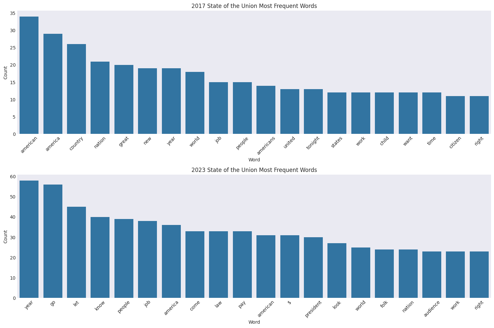
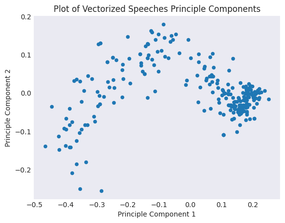
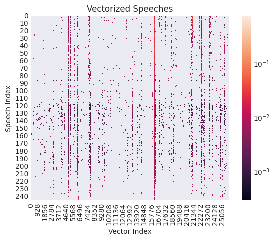
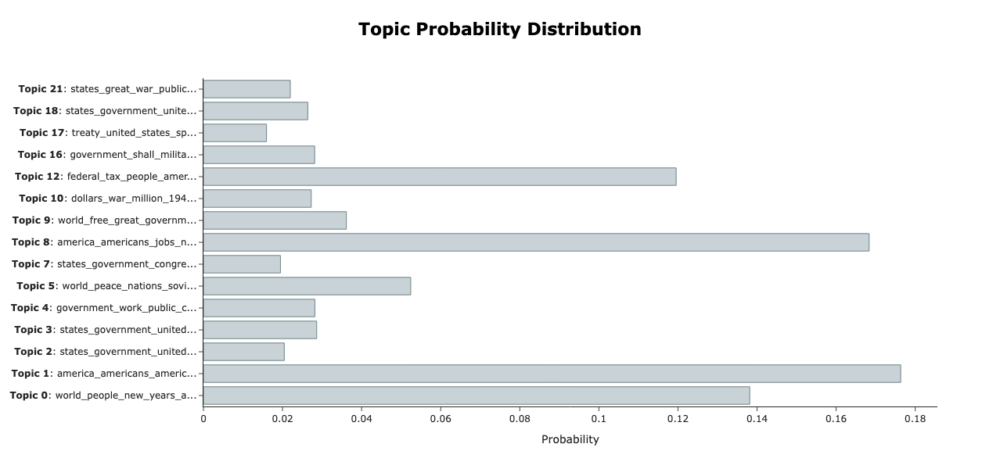
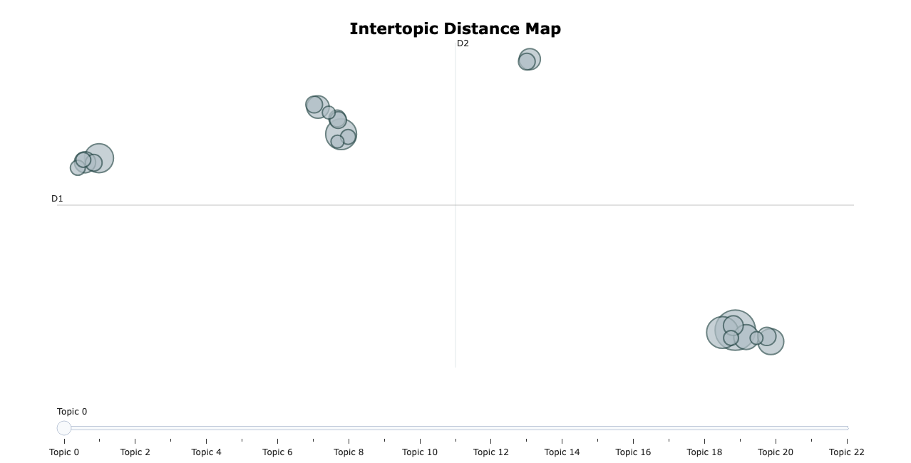

Project 2: Reproducibility in Natural Language Processing#
Part 1: Data Loading and Initial Exploration (15 pts)#
The data for this project is stored in the data folder in your repositories, in the SOTU.csv file. The data file is structured as a CSV with columns for president name, speech text, year, and word count in the speech.
In this section you will:
Import the data into a pandas dataframe
Perform exploratory data analysis (EDA) including specifically:
Analyze the number of speeches per president
Analyze the number of speeches per year
Analyze the word count distribution
Analyze the word count distribution accross years using a rug plot
Analyze the average word count per president
Write commentary on your findings
First, create the conda environment with the provided yaml file. Note, it’s not unusual for it to take ~15 minutes for the environment to fully install.
Read Data#
# imports
import pandas as pd
import matplotlib.pyplot as plt
import seaborn as sns
plt.style.use('seaborn-v0_8-dark')
# read in SOTU.csv using pandas, name the variable `sou` for simplicity
# the below cell is what the output should look like
sou = pd.read_csv('data/SOTU.csv')
sou
| President | Year | Text | Word Count | |
|---|---|---|---|---|
| 0 | Joseph R. Biden | 2024.0 | \n[Before speaking, the President presented hi... | 8003 |
| 1 | Joseph R. Biden | 2023.0 | \nThe President. Mr. Speaker——\n[At this point... | 8978 |
| 2 | Joseph R. Biden | 2022.0 | \nThe President. Thank you all very, very much... | 7539 |
| 3 | Joseph R. Biden | 2021.0 | \nThe President. Thank you. Thank you. Thank y... | 7734 |
| 4 | Donald J. Trump | 2020.0 | \nThe President. Thank you very much. Thank yo... | 6169 |
| ... | ... | ... | ... | ... |
| 241 | George Washington | 1791.0 | \nFellow-Citizens of the Senate and House of R... | 2264 |
| 242 | George Washington | 1790.0 | \nFellow-Citizens of the Senate and House of R... | 1069 |
| 243 | George Washington | 1790.0 | \nFellow-Citizens of the Senate and House of R... | 1069 |
| 244 | George Washington | 1790.0 | \nFellow-Citizens of the Senate and House of R... | 1069 |
| 245 | George Washington | 1790.0 | \nFellow-Citizens of the Senate and House of R... | 1069 |
246 rows × 4 columns
Exploratory Data Analysis#
Replicate the plots below using the hints specified. For each plot, provide some commentary describing the results/anything interesting you might see.
Number of Speeches per President#
# get the value counts of the presidents
president_counts = sou['President'].value_counts()[sou['President'].unique()]
president_counts
President
Joseph R. Biden 4
Donald J. Trump 4
Barack Obama 8
George W. Bush 8
William J. Clinton 8
George Bush 4
Ronald Reagan 8
Jimmy Carter 7
Gerald R. Ford 3
Richard M. Nixon 6
Lyndon B. Johnson 6
John F. Kennedy 3
Dwight D. Eisenhower 10
Harry S Truman 8
Franklin D. Roosevelt 11
Herbert Hoover 4
Calvin Coolidge 6
Warren G. Harding 2
Woodrow Wilson 8
William Howard Taft 4
Theodore Roosevelt 8
William McKinley 4
Grover Cleveland 8
Benjamin Harrison 4
Chester A. Arthur 4
Rutherford B. Hayes 4
Ulysses S. Grant 8
Andrew Johnson 4
Abraham Lincoln 4
James Buchanan 4
Franklin Pierce 4
Millard Fillmore 3
Zachary Taylor 1
James K. Polk 4
John Tyler 4
Martin Van Buren 4
Andrew Jackson 8
John Quincy Adams 4
James Monroe 8
James Madison 8
Thomas Jefferson 8
John Adams 4
George Washington 12
Name: count, dtype: int64
president_counts.plot(kind='bar', figsize=(18, 5))
plt.title('Number of Speeches per President')
plt.ylabel('Count');

# Plot
# Hint - use the .plot() method for Pandas Series, make sure all presidents show up on x-axis
Observation: George Washington, the first president, had the most speeches, and Franklin Roosevelt had the second most. Zachary Taylor had the least number of speeches. There seems to be no particular trend with the number of speeches of each president chronologically.
Number of Speeches per Year#
speeches_per_year = sou['Year'].value_counts().sort_index(ascending=True)
speeches_per_year
Year
1790.0 4
1791.0 2
1792.0 2
1793.0 1
1794.0 1
..
2020.0 1
2021.0 1
2022.0 1
2023.0 1
2024.0 1
Name: count, Length: 232, dtype: int64
speeches_per_year.plot()
plt.ylabel('Count')
plt.title('Number of State of the Union Speechs per Year');

# Hint - Use value counts and sort by years
The number of speeches peaked right before 1800, and had more of a steady count from 1 to 2 per year, with 2 speeches every few years from 1950 to before 2000.
Word Count Distribution#
sns.histplot(data=sou, x='Word Count')
plt.title('Distribution of State of the Union Speech Word Counts');

# Hint - try seaborn.histplot()
Most speeches are close to 5000 words, and the distribution of the number of speeches is skewed to the right, with high numbers being around 30000 words.
Word Count Distribution over Year#
min_year = sou['Year'].min()
max_year = sou['Year'].max()
sns.scatterplot(data=sou, x='Word Count', y='Year')
sns.rugplot(data=sou, x='Word Count', color='#0072B2') # bottom axis ticks
sns.rugplot(data=sou, y='Year', color='#0072B2') # left axis ticks
plt.title('Speech Year Versus Word Count')
plt.show()

# Hint: try seaborn.rugplot()
The number of words is more clustered around the lower end of the spectrum. There is somewhat of an upwards trend in number of words spoken over time, though it is unclear how strongly the word count and the year are correlated based on the visual.
Word Count Distribution per President#
sou.head()
| President | Year | Text | Word Count | |
|---|---|---|---|---|
| 0 | Joseph R. Biden | 2024.0 | \n[Before speaking, the President presented hi... | 8003 |
| 1 | Joseph R. Biden | 2023.0 | \nThe President. Mr. Speaker——\n[At this point... | 8978 |
| 2 | Joseph R. Biden | 2022.0 | \nThe President. Thank you all very, very much... | 7539 |
| 3 | Joseph R. Biden | 2021.0 | \nThe President. Thank you. Thank you. Thank y... | 7734 |
| 4 | Donald J. Trump | 2020.0 | \nThe President. Thank you very much. Thank yo... | 6169 |
mean_word_count
---------------------------------------------------------------------------
NameError Traceback (most recent call last)
Cell In[18], line 1
----> 1 mean_word_count
NameError: name 'mean_word_count' is not defined
mean_word_count = pd.Series(sou.groupby('President').mean('Word Count')['Word Count'])[sou['President'].unique()]
mean_word_count
President
Joseph R. Biden 8063.500000
Donald J. Trump 5586.500000
Barack Obama 6624.000000
George W. Bush 4971.750000
William J. Clinton 7457.625000
George Bush 4357.500000
Ronald Reagan 4482.875000
Jimmy Carter 7874.714286
Gerald R. Ford 4495.666667
Richard M. Nixon 4427.333333
Lyndon B. Johnson 4715.833333
John F. Kennedy 5555.000000
Dwight D. Eisenhower 4703.500000
Harry S Truman 8131.625000
Franklin D. Roosevelt 3476.090909
Herbert Hoover 6251.500000
Calvin Coolidge 8529.833333
Warren G. Harding 5612.500000
Woodrow Wilson 4311.625000
William Howard Taft 22335.750000
Theodore Roosevelt 19505.125000
William McKinley 18380.000000
Grover Cleveland 13798.250000
Benjamin Harrison 13507.500000
Chester A. Arthur 10031.250000
Rutherford B. Hayes 10784.000000
Ulysses S. Grant 8879.375000
Andrew Johnson 9485.500000
Abraham Lincoln 6746.250000
James Buchanan 13993.000000
Franklin Pierce 10377.000000
Millard Fillmore 10414.000000
Zachary Taylor 7559.000000
James K. Polk 17885.750000
John Tyler 8457.500000
Martin Van Buren 11261.250000
Andrew Jackson 11160.500000
John Quincy Adams 7662.500000
James Monroe 5224.500000
James Madison 2681.000000
Thomas Jefferson 2558.875000
John Adams 1769.250000
George Washington 1880.083333
Name: Word Count, dtype: float64
mean_word_count.plot(kind='bar', figsize=(18, 5))
plt.title('Average State of the Union Word Count per President')
plt.ylabel('Average Word Count');

# Hint: use pandas groupby to get mean word count per president then sort by order
William Howard Taft had the highest average word count, and there was an upward trend in average word count from abraham lincoln to william howard taft. After that, the word count looks pretty uniform with some fluctuations.
Part 2: Simple Text Processing - Tokenization, Lemmatization, Word Frequency, Vectorization (20 pts)#
Now we will start working on simple text processing using the SpaCy package and the same dataset as Part 1. The package should already be included in the environment.yml. However, we will also need to download en_core_web_sm, an English language text processing model. To do this, while having your sotu environment activated, run the following:
python -m spacy download en_core_web_sm
Now, you should be good to go!
Some important definitions:
Token: a single word or piece of a word
Lemma: the core component of a word, e.g., “complete” is the lemma for “completed” and “completely”
Stop Word: a common word that does not add semantic value, such as “a”, “and”, “the”, etc.
Vectorization: representing a document as a vector where each index in the vector corresponds to a token or word and each entry is the count.
In this section, we will explore the most common tokens and lemmas throughout different slices of the speech data. We will also develop vectorization representations of the speeches.
The core steps are:
Process speeches using the SpaCy nlp module
Analyze Tokens vs Lemmas:
Create a list of all tokens across all speeches that are not stop words, punctuation, or spaces.
Create a second list of the lemmas for these same tokens.
Display the top 25 for each of these and compare.
Analyze common word distributions over different years:
Create a function that takes the dataset and a year as an input and outputs the top n lemmas for that year’s speeches
Compare the top 10 words for 2023 versus 2019
Document Vectorization:
Train a Term Frequency-Inverse Document Frequency (TF-IDF) vectorization model using your processed dataset and scikit learn
Output the feature vectors
Helpful Resources:
https://realpython.com/natural-language-processing-spacy-python/
https://www.statology.org/text-preprocessing-feature-engineering-spacy/
https://www.geeksforgeeks.org/nlp/how-to-store-a-tfidfvectorizer-for-future-use-in-scikit-learn/
Processing Speeches with SpaCy#
Lets study just speeches from 2000 and onwards to begin with. So, be sure to subset your DataFrame to just these speeches before continuing!
import spacy
from tqdm import tqdm
from collections import Counter
nlp = spacy.load("en_core_web_sm")
---------------------------------------------------------------------------
ModuleNotFoundError Traceback (most recent call last)
Cell In[25], line 1
----> 1 import spacy
2 from tqdm import tqdm
3 from collections import Counter
ModuleNotFoundError: No module named 'spacy'
# subset the speech dataframe for speeches from 2000 and onwards
# Process each speeches using the 'nlp' function
# Hint - loop through each speech and pass the text into the nlp function above, storing the output in a list
# should take about 30 seconds to process
100%|██████████| 25/25 [00:27<00:00, 1.10s/it]
Analyze Tokens vs Lemmas#
Token List#
Create a list of tokens across all speeches that are not spaces, stopwords, or punctuation. Make each token lowercase as well. Hint: each element of the list we just created are themselves lists of tokens. Token objects have attributes is_stop, is_punct, and is_space.
# print top 20 tokens
# Hint - use Counter, and one of the Counter object's methods to display the top 20
[('america', 816),
('people', 637),
('american', 582),
('new', 530),
('years', 439),
('americans', 437),
('world', 425),
('year', 406),
('country', 369),
('jobs', 348),
('tonight', 344),
('work', 324),
('know', 323),
('let', 320),
('congress', 317),
('nation', 311),
('time', 301),
('help', 282),
('need', 266),
('tax', 255)]
Lemma List#
Do the same as above, but for lemmas. Hint: recall lemmas are components of words. Each token should have an attribute to extract the lemma.
Token versus Lemma Comparison#
What do you notice about the top tokens versus the top lemmas? Consider two tokens - “year” and “years” - how do their counts compare to the lemma “year”? What about the lemma “child”?
Common Words#
Common Words per Year Function#
Fill in the below function to obtain the n-most common words in speeches for a given year.
inputs:
df raw unprocessed sou dataframe
year
n outputs:
top n words for that years
steps:
subset the dataframe for the year of interest - note the years might not be in int type
process the subsetted dataframe with spacy
get the lemmas across all those speeches
count the top n lemmas
def get_most_common_words(df, year, n=25):
"""
Processes the SOTU speech for a given year and returns
the most common non-stopword/punctuation lemmas.
"""
# Step 1: Subset df
# Step 2: Process the text with spaCy
# Step 3: Get lemmas
return ...
# test it on 2024
100%|██████████| 1/1 [00:01<00:00, 1.40s/it]
[('president', 58),
('year', 45),
('america', 44),
('american', 34),
('people', 33),
('$', 33),
('member', 32),
('want', 29),
('audience', 29),
('know', 29)]
Compare 2023 to 2017#
Run your function from the previous step to get the top 20 words for 2017 and 2023. Plot the words and their frequencies in a barchart and replicate the figure below.
words_2023 = ...
words_2017 = ...
100%|██████████| 1/1 [00:01<00:00, 1.59s/it]
100%|██████████| 1/1 [00:00<00:00, 1.30it/s]
words_2023
---------------------------------------------------------------------------
NameError Traceback (most recent call last)
Cell In[1], line 1
----> 1 type(words_2023)
NameError: name 'words_2023' is not defined
words_2017
[('american', 34),
('america', 29),
('country', 26),
('nation', 21),
('great', 20),
('new', 19),
('year', 19),
('world', 18),
('job', 15),
('people', 15),
('americans', 14),
('united', 13),
('tonight', 13),
('states', 12),
('work', 12),
('child', 12),
('want', 12),
('time', 12),
('citizen', 11),
('right', 11)]
# Hint - put the words and counts into a pd Dataframe for better structure
# and to make plotting easier
df_2017 = ...
df_2023 = ...
# Hint - use seaborn, subplots, and rotate tick labels

TF-IDF Vectorization#
To use statsitical alorithms on documents, we need to transform them into vectors, where each element of the vector corresponds to a particular word in a document or corpus of documents. One common way is via TF-IDF embeddings. LLMs work similarly - they typically use transformer models to generate text embeddings before sending text through a deep neural network.
Here we will fit a TF-IDF vectorizer, plot all the speeches on a 2-D grid using PCA and also using a heatmap, and examine TF-IDF scores for the top 10 most common words in the first speech. This is a good resource here: https://medium.com/GeoffreyGordonAshbrook/vector-visualization-2d-plot-your-tf-idf-with-pca-83fa9fccb1d
from sklearn.feature_extraction.text import TfidfVectorizer
from sklearn.decomposition import PCA
Train the Vectorizer and Transform the Data#
# you may use this as input to fit the TF-IDF vectorizer
raw_docs = sou["Text"].to_list()
# Hint - use fit_transform for vectorizer and PCA
The output of fit_transform() will be a matrix where each row corresponds to a speech, each column corresponds to a word in the corpus of speeches, and the value is the TF-IDF score which measures the importance of that word in that speech, relative to the rest of the speeches.
Plot Speeches#
First used PCA to generate the first chart
Second use seaborn heatmap with a log-scaled color axis to generate the second chart
# Step 1: Set PCA to find first 2 principal components
# Step 2: Create a new dataframe where each row is a speech, and each column is a projection onto
# one of the two principal components
# Plot Data Visualization (Matplotlib)

# Hint - vectorized_docs is a sparse matrix whose rows are speeches and columns are tokens, with each
# value being a TF-IDF score. Densify this array first, and then plot using seaborn.

Get the TF-IDF value for certain words and documents#
word_list = ['year',
'america',
'people',
'american',
'work',
'new',
'job',
'country',
'americans',
'world'] # top ten most common words through whole corpus
word_nums = ... # get each word's index number using the .vocabular_ attributed of vectorizer
idf_score = ... # get their IDF score by using .idf_ at the indices from the previous step
tf_idf = ... # get the tf_idf score for the first speech
pd.DataFrame({"Word": word_list, "IDF Score": idf_score, "TF-IDF Score": tf_idf})
| Word | IDF Score | TF-IDF Score | |
|---|---|---|---|
| 0 | year | 1.032925 | 0.022719 |
| 1 | america | 1.272946 | 0.068439 |
| 2 | people | 1.037118 | 0.043087 |
| 3 | american | 1.102217 | 0.045792 |
| 4 | work | 1.162281 | 0.005681 |
| 5 | new | 1.024591 | 0.016275 |
| 6 | job | 2.043480 | 0.009988 |
| 7 | country | 1.008130 | 0.013550 |
| 8 | americans | 1.713598 | 0.041877 |
| 9 | world | 1.138750 | 0.026438 |
Part 3: Advanced Text Processing - LDA and BERTopic Topic Modeling (20 pts)#
Resources:
LDA:
https://medium.com/sayahfares19/text-analysis-topic-modelling-with-spacy-gensim-4cd92ef06e06
https://www.kaggle.com/code/faressayah/text-analysis-topic-modeling-with-spacy-gensim#📚-Topic-Modeling (code for previous post)
https://towardsdatascience.com/topic-modelling-in-python-with-spacy-and-gensim-dc8f7748bdbf/
BERTopic:
from spacy import displacy
from bertopic import BERTopic
from gensim.corpora import Dictionary
from gensim.models import LdaModel
from sklearn.feature_extraction.text import CountVectorizer
import pyLDAvis
import pyLDAvis.gensim_models
LDA#
Train an LDA model with 18 topics
Output the top 10 words for each topic.
Output the topic distribution for the first speech
Make a visualization
You may use the next two cells to process the data.
def preprocess_text(text):
doc = nlp(text)
return [token.lemma_.lower() for token in doc if not token.is_stop and not token.is_punct and not token.is_space and len(token.lemma_) > 3]
# Process all texts - note this takes ~ 5 minutes to run
processed_docs = sou['Text'].apply(preprocess_text)
To train an LDA model, use the LdaModel function that we imported a couple of cells back. The last resource linked under the LDA section is especially useful for walking through the steps we have below. Note: one of the arguments to the LdaModel function is random_state which specifies the random seed for reproducibility. Please set yours to 42. Further, the last resource provided uses LdaMulticore which is essentially a parallelizable version of our function LdaModel. Use LdaModel instead, but the usage will be similar, except you can ignore the iterations and workers arguments...
# Build dictionary from processed_docs, which is a list of tokens extracted from our speeches
# train LDA model with 18 topics
# print the top 10 words for each topic
--- LDA Topics ---
Topic: 0
Words: 0.004*"cent" + 0.004*"june" + 0.004*"gold" + 0.003*"island" + 0.003*"silver" + 0.003*"bond" + 0.003*"method" + 0.003*"convention" + 0.003*"indian" + 0.003*"note"
Topic: 1
Words: 0.008*"depression" + 0.007*"program" + 0.007*"recovery" + 0.006*"budget" + 0.006*"unemployment" + 0.006*"loan" + 0.006*"activity" + 0.006*"farm" + 0.005*"emergency" + 0.005*"cent"
Topic: 2
Words: 0.008*"dictator" + 0.005*"expression" + 0.004*"british" + 0.004*"1914" + 0.003*"impressive" + 0.003*"actual" + 0.003*"revolution" + 0.003*"schedule" + 0.003*"continent" + 0.003*"partisanship"
Topic: 3
Words: 0.008*"forest" + 0.007*"corporation" + 0.005*"judge" + 0.005*"wrong" + 0.005*"interstate" + 0.004*"employee" + 0.003*"bureau" + 0.003*"body" + 0.003*"mountain" + 0.003*"island"
Topic: 4
Words: 0.017*"program" + 0.014*"soviet" + 0.009*"1980" + 0.009*"u.s." + 0.008*"area" + 0.007*"major" + 0.006*"goal" + 0.006*"commitment" + 0.006*"challenge" + 0.006*"nuclear"
Topic: 5
Words: 0.015*"americans" + 0.014*"tonight" + 0.007*"thank" + 0.007*"today" + 0.007*"budget" + 0.006*"hard" + 0.005*"program" + 0.005*"worker" + 0.005*"deficit" + 0.005*"challenge"
Topic: 6
Words: 0.004*"minister" + 0.004*"british" + 0.004*"intercourse" + 0.003*"tribe" + 0.003*"france" + 0.003*"article" + 0.003*"indians" + 0.003*"spain" + 0.003*"convention" + 0.003*"deem"
Topic: 7
Words: 0.019*"program" + 0.008*"billion" + 0.007*"budget" + 0.006*"today" + 0.006*"inflation" + 0.005*"americans" + 0.005*"percent" + 0.004*"major" + 0.004*"area" + 0.004*"farm"
Topic: 8
Words: 0.006*"method" + 0.004*"railroad" + 0.004*"conference" + 0.004*"board" + 0.004*"farmer" + 0.004*"interstate" + 0.004*"agricultural" + 0.003*"industrial" + 0.003*"corporation" + 0.003*"cent"
Topic: 9
Words: 0.006*"corporation" + 0.006*"tariff" + 0.005*"industrial" + 0.005*"evil" + 0.004*"combination" + 0.004*"island" + 0.004*"merely" + 0.004*"forest" + 0.004*"interstate" + 0.004*"farmer"
Topic: 10
Words: 0.001*"program" + 0.001*"americans" + 0.001*"mexico" + 0.001*"june" + 0.001*"gold" + 0.001*"minister" + 0.001*"convention" + 0.001*"tonight" + 0.001*"company" + 0.001*"island"
Topic: 11
Words: 0.014*"americans" + 0.009*"tonight" + 0.007*"percent" + 0.007*"thank" + 0.006*"worker" + 0.006*"iraq" + 0.006*"democracy" + 0.005*"fight" + 0.005*"terrorist" + 0.005*"challenge"
Topic: 12
Words: 0.017*"program" + 0.009*"billion" + 0.008*"1947" + 0.007*"nations" + 0.007*"1946" + 0.006*"fight" + 0.006*"soviet" + 0.006*"housing" + 0.006*"communist" + 0.005*"1945"
Topic: 13
Words: 0.006*"june" + 0.006*"convention" + 0.005*"slave" + 0.005*"slavery" + 0.004*"mexico" + 0.004*"kansas" + 0.004*"article" + 0.004*"minister" + 0.004*"election" + 0.004*"spain"
Topic: 14
Words: 0.015*"weapon" + 0.014*"terrorist" + 0.010*"iraq" + 0.009*"americans" + 0.009*"saddam" + 0.009*"regime" + 0.008*"hussein" + 0.008*"terror" + 0.007*"threat" + 0.007*"drug"
Topic: 15
Words: 0.014*"article" + 0.012*"manufacture" + 0.011*"port" + 0.007*"spain" + 0.006*"colony" + 0.006*"appoint" + 0.006*"admit" + 0.006*"france" + 0.005*"likewise" + 0.005*"presume"
Topic: 16
Words: 0.003*"mexico" + 0.002*"texas" + 0.001*"convention" + 0.001*"minister" + 0.001*"indian" + 0.001*"june" + 0.001*"program" + 0.001*"mexican" + 0.001*"article" + 0.001*"british"
Topic: 17
Words: 0.023*"mexico" + 0.010*"texas" + 0.007*"mexican" + 0.004*"minister" + 0.004*"currency" + 0.004*"article" + 0.004*"paper" + 0.003*"california" + 0.003*"oregon" + 0.003*"enemy"
# print the topic distribution for the first speech
[(11, np.float32(0.99942815))]
# make a visualization using pyLDAvis
pyLDAvis.enable_notebook()
...
BERTopic#
Train a BERTopic model with a
min_topic_sizeof 3 Hint: useBERTopicto instantiate the model and specifymin_topic_sizein here. Actually fit the model usingfit_transform, whichdocspassed into this.Output the top 10 words for each topic.
Output the topic distribution for the first speech
Make a visualization of the topics (see topic_model.visualize_topics())
docs = sou['Text'].to_list()
# train the model - this takes about 30 seconds
# remove stop words from the topics (Hint: use CountVectorizer and then .update_topics on topic_model)
2025-11-08 22:50:56,658 - BERTopic - Embedding - Transforming documents to embeddings.
Batches: 100%|██████████| 8/8 [00:08<00:00, 1.03s/it]
2025-11-08 22:51:09,053 - BERTopic - Embedding - Completed ✓
2025-11-08 22:51:09,054 - BERTopic - Dimensionality - Fitting the dimensionality reduction algorithm
2025-11-08 22:51:19,326 - BERTopic - Dimensionality - Completed ✓
2025-11-08 22:51:19,327 - BERTopic - Cluster - Start clustering the reduced embeddings
2025-11-08 22:51:19,342 - BERTopic - Cluster - Completed ✓
2025-11-08 22:51:19,346 - BERTopic - Representation - Fine-tuning topics using representation models.
2025-11-08 22:51:20,853 - BERTopic - Representation - Completed ✓
# output the top 10 words for each topic - hint see get_topic_info
| Topic | Count | Name | Representation | Representative_Docs | |
|---|---|---|---|---|---|
| 0 | -1 | 56 | -1_states_government_united_congress | [states, government, united, congress, country... | [\nTo the Congress of the United States:\nYour... |
| 1 | 0 | 29 | 0_world_people_new_years | [world, people, new, years, america, american,... | [\nMr. Speaker, Mr. President, my colleagues i... |
| 2 | 1 | 18 | 1_america_americans_american_people | [america, americans, american, people, tonight... | [\nMr. Speaker, Vice President Cheney, Members... |
| 3 | 2 | 17 | 2_states_government_united_congress | [states, government, united, congress, public,... | [\nTo the Senate and House of Representatives ... |
| 4 | 3 | 15 | 3_states_government_united_law | [states, government, united, law, congress, ye... | [\nTo the Senate and House of Representatives:... |
| 5 | 4 | 12 | 4_government_work_public_congress | [government, work, public, congress, great, la... | [\nTo the Senate and House of Representatives:... |
| 6 | 5 | 11 | 5_world_peace_nations_soviet | [world, peace, nations, soviet, nation, econom... | [\nMr. President, Mr. Speaker, Members of the ... |
| 7 | 6 | 9 | 6_british_states_united_war | [british, states, united, war, enemy, great, f... | [\nFellow-Citizens of the Senate and House of ... |
| 8 | 7 | 8 | 7_states_government_congress_united | [states, government, congress, united, year, c... | [\nFellow-Citizens of the Senate and House of ... |
| 9 | 8 | 8 | 8_america_americans_jobs_new | [america, americans, jobs, new, american, that... | [\nMadam Speaker, Mr. Vice President, Members ... |
| 10 | 9 | 7 | 9_world_free_great_government | [world, free, great, government, nations, peop... | [\nGENTLEMEN OF THE CONGRESS:\nThe year that h... |
| 11 | 10 | 6 | 10_dollars_war_million_1947 | [dollars, war, million, 1947, fiscal, expendit... | [\nMEMBERS OF THE CONGRESS:\nSo many problems ... |
| 12 | 11 | 5 | 11_bank_public_states_country | [bank, public, states, country, government, su... | [\nFellow-Citizens of the Senate and House of ... |
| 13 | 12 | 5 | 12_federal_tax_people_america | [federal, tax, people, america, budget, spendi... | [\nMr. Speaker, Mr. President, distinguished M... |
| 14 | 13 | 5 | 13_states_government_united_great | [states, government, united, great, public, po... | [\nFellow-Citizens of the Senate and House of ... |
| 15 | 14 | 5 | 14_government_department_united_states | [government, department, united, states, congr... | [\nTo the Congress of the United States:\nAt t... |
| 16 | 15 | 5 | 15_government_public_states_general | [government, public, states, general, subject,... | [\nFellow-Citizens of the Senate and House of ... |
| 17 | 16 | 4 | 16_government_shall_military_islands | [government, shall, military, islands, people,... | [\n[Delivered in person before a joint session... |
| 18 | 17 | 4 | 17_treaty_united_states_spain | [treaty, united, states, spain, year, congress... | [\nGentlemen of the Senate and Gentlemen of th... |
| 19 | 18 | 4 | 18_states_government_united_constitution | [states, government, united, constitution, con... | [\nTo the Senate and House of Representatives:... |
| 20 | 19 | 4 | 19_information_provision_public_united | [information, provision, public, united, prope... | [\nFellow-Citizens of the Senate and House of ... |
| 21 | 20 | 3 | 20_government_congress_national_federal | [government, congress, national, federal, publ... | [\nTo the Senate and House of Representatives:... |
| 22 | 21 | 3 | 21_states_great_war_public | [states, great, war, public, power, country, c... | [\nTo the Senate and House of Representatives:... |
| 23 | 22 | 3 | 22_states_public_government_united | [states, public, government, united, congress,... | [\nFellow-Citizens of the Senate and House of ... |
# output the topic distribution for the first speech
# hint: check out approximate_distribution() and visualize_distribution()
100%|██████████| 1/1 [00:14<00:00, 14.91s/it]

# run this cell to visualize the topics
topic_model.visualize_topics()

Part 4: Choose your own advecnture! (7 Points; Optional for Extra Credit)#
This section is open ended and your chance to explare any advanced analysis. Please perform any additional analysis you find interesting! Suggested analyses (only do one max):
Topic evolution over time - see https://maartengr.github.io/BERTopic/getting_started/topicsovertime/topicsovertime.html#visualization
Word frequency over time - does the frequency of certain words change over time
Semantic similarity - investigate similarity within and between presidents or time periods. For example, similarity between one presidents speeches, e.g. are all of Biden’s speeches similar to each other? How similar are they to Trump’s speeches? Are speeches from the 2000s more similar to each other than speeches in the 1800s? Which two presidents have the most similar speeches? See https://spacy.io/usage/linguistic-features#vectors-similarity
Named Entity Recognition - which entity types are most common in speeches? What are the most common words for each entity type - see https://spacy.io/usage/linguistic-features#named-entities
Classification - can you build a classifier to detect democratic versus republican state of the union speeches from 1980-2024 - see https://scikit-learn.org/stable/auto_examples/text/plot_document_classification_20newsgroups.html#sphx-glr-auto-examples-text-plot-document-classification-20newsgroups-py